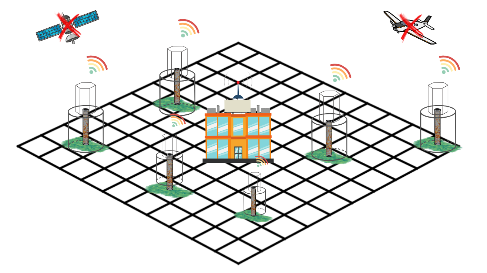
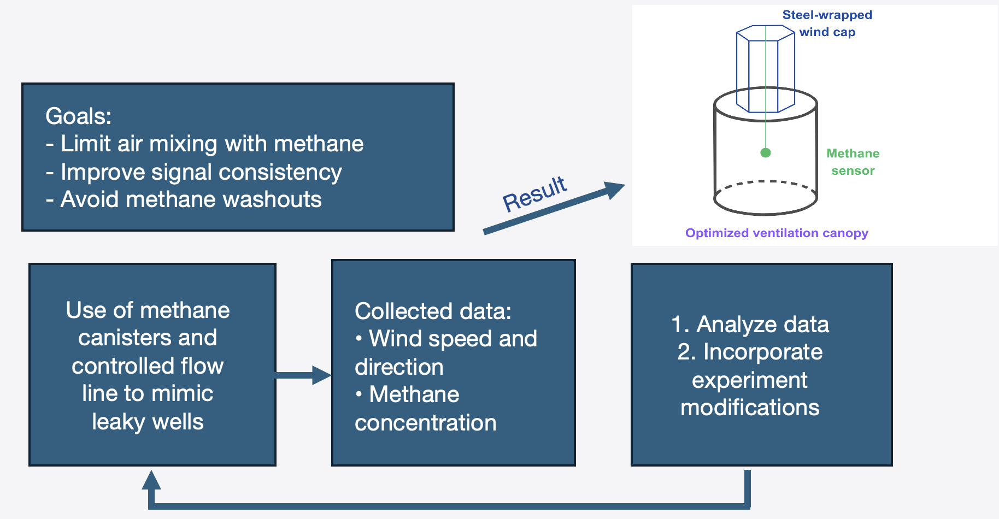
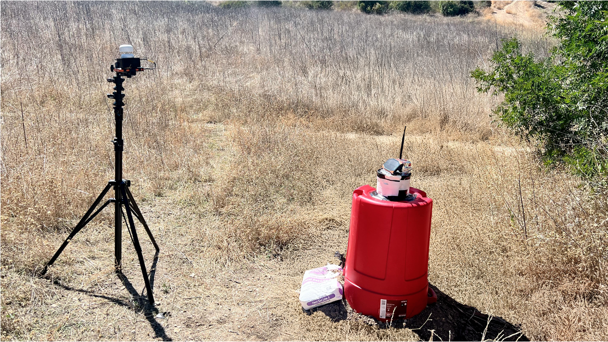
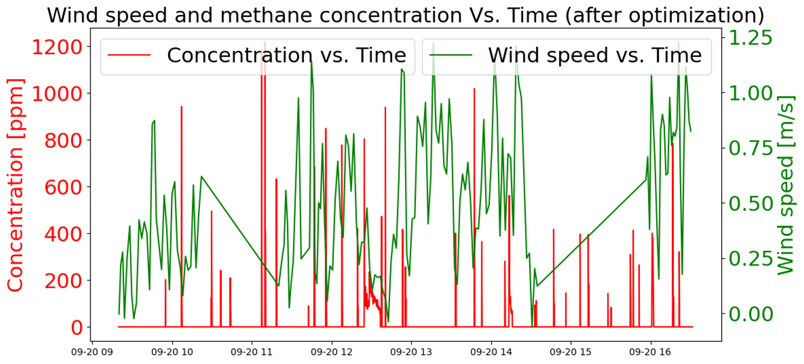
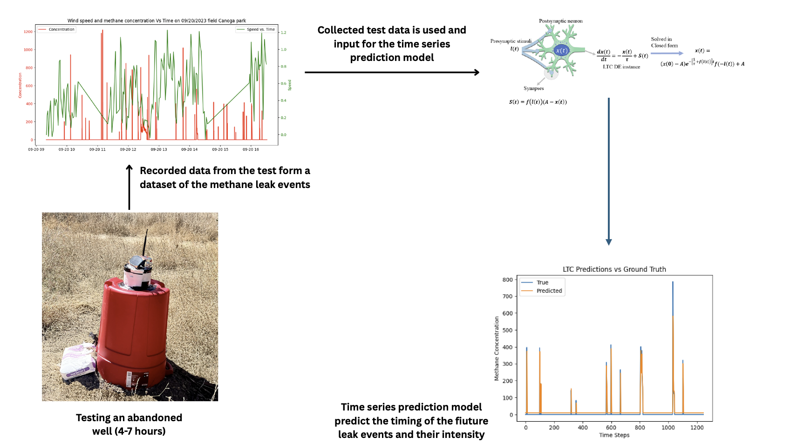

IoT-enabled static chamber monitoring for plugged and unplugged abandoned wells.
This project has shaped my Ph.D. thesis. I first became interested in the problem after visiting several oilfields in the Los Angeles area and observing how orphaned and abandoned wells can develop integrity problems over time. Failures in well barriers can allow methane, crude oil, and other gases to escape to the surface or migrate into surrounding soil and groundwater. In addition to contributing to global warming, these leaks can create risks of explosions, fires, and the release of toxic substances into nearby communities.

Low-rate and intermittent emissions are difficult to detect because wind can rapidly dilute methane, and short field visits may miss episodic leaks. An effective monitoring system must contain and mix the emitted gas, maintain reliable sensing conditions, and connect time-varying concentration measurements to the severity of well-integrity problems.
The monitoring system was first evaluated under controlled conditions using methane canisters and regulated flow lines to simulate leaking wells. Wind speed, wind direction, and methane concentration were recorded and analyzed. The experimental setup was then modified iteratively, resulting in an optimized ventilation canopy designed to limit air mixing, improve signal consistency, and reduce methane washout.

After the canopy was optimized, the monitoring system was deployed at an abandoned well. The field setup combined the canopy and methane sensor with a separate wind sensor so that changes in methane concentration could be interpreted together with changing wind conditions.

During field testing, the system recorded methane concentration together with wind speed and direction. These measurements provided the information needed to examine signal consistency, methane washout, and the response of the optimized canopy under changing field conditions.

Recorded field measurements form a dataset of methane leak events. These data can be used as input to a Liquid Time-Constant network that learns the temporal behavior of the signal and predicts the timing and intensity of future leak events.

| Role | Doctoral researcher |
|---|---|
| Institution | University of Southern California |
| Application | Plugged, idle, orphaned, and abandoned wells |
| Methods | IoT sensors, static chambers, field experiments, and time-series analysis |